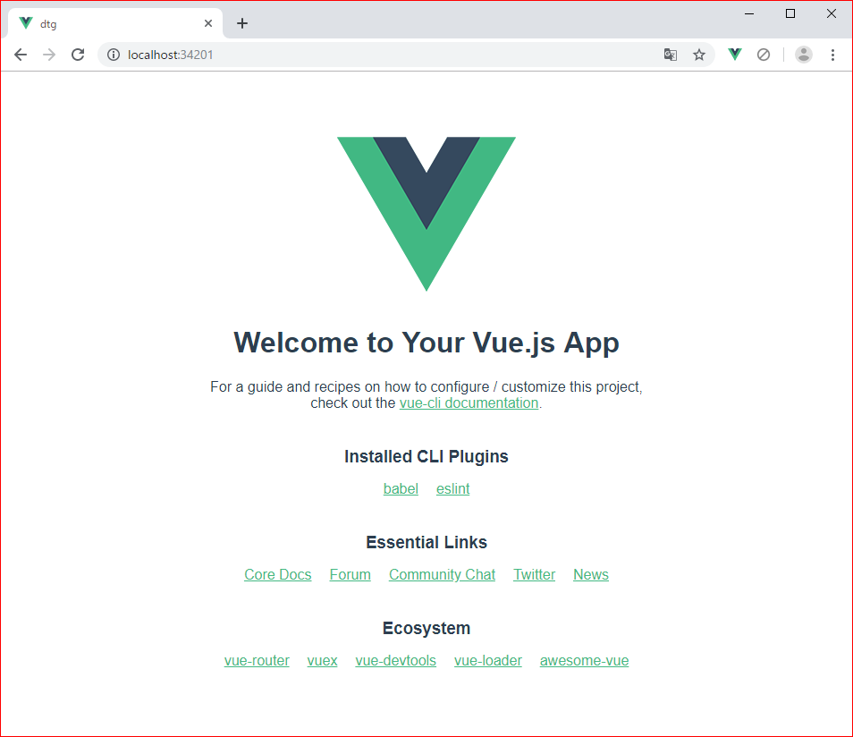
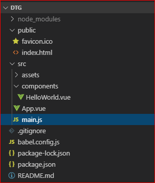
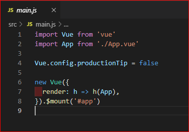
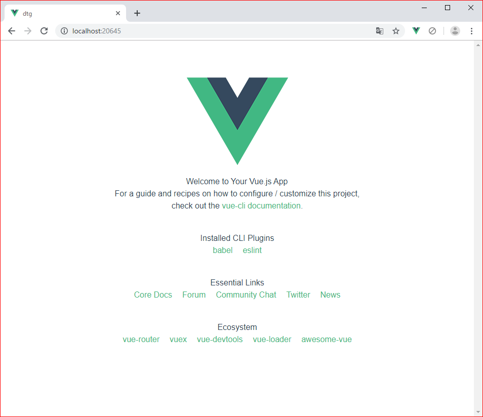
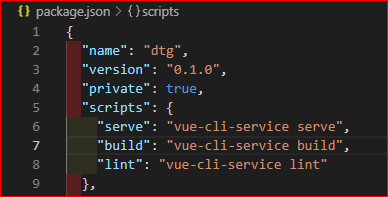

フロントの勉強としてVue.jsをいじってますが、Vue.jsのCLIを使ってシンプルなサイトを構築する際の手順についてまとめます。
まずは構築するにあたって、開発環境の用意を行います。なお今回はNuxt.jsを利用しない（あるいは利用するまでもない）、ライトな用途を想定しています。SSRする必要がある、とかならNuxt.jsの導入を検討してみるべきかと思います。
npmを利用する場合はNode.jsのインストールが必要です。
Vue.jsのインストールには、npmを利用してローカルの環境に展開しておくか、Dockerで環境を準備するか、CDNを利用します。
ローカル環境にインストールする場合は、オフィシャルページに則って下記のコマンドを実行します。
npm install vueなお、オフィシャルでは大規模なアプリを構築する場合はNPMを利用しろ、とのことです。
Vue.js による大規模アプリケーションを構築するときには、NPM を利用したインストールを推奨しています。
こちらをどうぞ。
NPMを利用したインストール以外にもunpkgやcdnjsを利用することでVue.jsを利用できます。
<script src="https://cdn.jsdelivr.net/npm/vue/dist/vue.js"></script>なお、本番環境ではバージョンを指定することが推奨されています。
<script src="https://cdn.jsdelivr.net/npm/vue@2.6.0"></script>本番環境では、新しいバージョンによる意図しない不具合を避けるため、特定のバージョン番号とビルド番号にリンクすることをお勧めします
Vue CLIはVue.jsを用いたサイトを生成する際に、環境のセットアップを肩代わりしてくれるコマンドラインのツールです。オフィシャルページを参考にして導入します。とは言っても難しいことではなく、下記のコマンドを実行するだけです。
npm install -g @vue/cliインストールが終わったらバージョンを確認してみます。
$ vue --version
3.10.0vueコマンドを叩いてプロジェクトを作成します。なお、下記のコマンドを実行する際は、事前にプロジェクトを作成するフォルダに移動してください。ここではフォルダをdummytextgenとします。コマンドを実行すると対話形式で作成するプロジェクトの内容を設定します。
cd dummytextgen
vue create dtgプリセットの選択
キーボードの上下キーで選択しますが、デフォルトで問題ないと思います。なお、vue routerやvuexを利用することが確定しているなら、Manually select featureを選択して手動で導入できます。
Vue CLI v3.10.0
? Please pick a preset: (Use arrow keys)
> default (babel, eslint)
Manually select featuresパッケージマネージャの選択
こちらもキーボードの上下キーで選択します。デフォルトではyarnにカーソルが当たっていましたが、npmを利用しているのでUse NPMを選択してエンターキーを押します。ちなみに、この選択肢が表示されるのはvue cliを起動した初回だけだと思われます（自分の環境だと今はもう出てこない）。
Vue CLI v3.10.0
? Please pick a preset: default (babel, eslint)
? Pick the package manager to use when installing dependencies: (Use arrow keys)
> Use Yarn
Use NPMしばらく待ちます
上記までの選択を行ったあとはしばらく待ちます。すると下記のようなメッセージが出力されるはずです。
Successfully created project dtg.
Get started with the following commands:
$ cd dtg
$ npm run serveとなったら、準備完了です。
とりあえず実行してみる
メッセージの通り、コマンドを実行してみます。
cd dtg
npm run serve正常に起動したらURLが表示されるはずなので、そのアドレスをブラウザにコピペしてアクセスしてみます。今回はhttp://localhost:34201/でした。

プロジェクトが作成されて、開発のサーバーが起動していることがこれで確認できました。
作成したプロジェクトの内容を見てみます。下記はフォルダ内容をVisual Studio Code（以下、vscode）で表示した様子です。

.jsや.htmlに混じって、.vueという見慣れない拡張子があります。これがVue.jsの単一ファイルコンポーネントと呼ばれる機能です。
これはHTML・JavaScript・CSSの3つを1ファイルにまとめ、1コンポーネントとして扱うVue.js独特の機能です。また、この単一ファイルコンポーネントは拡張子が上記の通り.vueです。とりあえず今回は触れずにそのまま行きます。
サイトを作るに当たって、画面のレイアウトはCSSフレームワーク（以下、FW）を使って楽をしたいところです。デザインセンスがないからね、仕方ないね_(:3」∠)_
FW、と来たら必ず名前が挙がる大定番のBootstrapですが、今回はこれ以外のFWを利用します。というのも、いまだにjQueryが絡んで来るので「Vue.js使ってるのにjQuery使うの？（白目）」ってことになるので。あとは単純に他のFWも使ってみたいなー、っていう素朴な欲求から来てます。
というわけで、ここではBuefyを利用します。これはBulmaをベースにした、Vue.jsの用のUIコンポーネントです。ちなみに、なんでBulmaよ？ってところなんですが下記のようなメリットがあります。
このうち、Bulmaの「JavaScriptなし」という部分をVue.jsを組み合わせることで補完したのがBuefy、ということになります。
とは言え、FWは結構好き嫌いがあると思うので、お気に入りのFWを導入するのが吉かと。個人的にはプロトタイプ作成に一時期litを使ってました。めちゃくちゃ軽い（minifyかつgzip済みだと395バイトしかない！）のに、しっかりレスポンシブ対応なのはポイント高かったです。とは言え、軽量な分機能がそこそこ制限されちゃうんで、小規模なサイトかプロトタイプ作成でのみ利用してました。
まずはオフィシャルの手順に則って、下記のコマンドを実行します。
npm install buefy次は、main.jsを編集します。Vue CLIでcreateした直後は、下の画像のような内容になっていると思います。

そこに、下記のソースを追記します。
import Vue from 'vue' // この行はもともと記述されているはず
import Buefy from 'buefy'
import 'buefy/dist/buefy.css'
Vue.use(Buefy)
なお、オフィシャルでは全機能のインポートを推奨していますが、下記のように「使用するコンポーネントだけインポートする」ことも可能です。
import Vue from 'vue'
import { Table, Input } from 'buefy'
import 'buefy/dist/buefy.css'
Vue.use(Table)
Vue.use(Input)
なお、アイコンを利用したい場合は下記のタグを記述する必要があります。Material Design Iconsを利用したい場合はこれ。
<link rel="stylesheet" href="https://cdn.materialdesignicons.com/2.5.94/css/materialdesignicons.min.css">もちろん、Font Awesomeとか他のアイコンセットを利用したい、という場合はNPM経由なりCDNなりで導入する必要があります。
環境のセットアップ時に導入せず、後になってvue routerが必要になった場合は下記の手順で導入します。
npm install vue-router環境のセットアップ時に導入せず、後になってvuexが必要になった場合は下記の手順で導入します。
npm install vuex各種コンポーネントのインストールが終わったら、ここで確認してみます。
ターミナルでプロジェクトのあるフォルダまで移動し、下記のコマンドを実行します。このコマンドを実行することでソースのコンパイルとローカルサーバの起動が行われます。
npm run serve実行したときのログはこんな感じ。
C:\hoge\dtg>npm run serve
> dtg@0.1.0 serve C:\hoge\dtg
> vue-cli-service serve
INFO Starting development server...
98% after emitting CopyPlugin
DONE Compiled successfully in 35564ms
App running at:
- Local: http://localhost:20645/
- Network: http://***.***.***.***:20645/
Note that the development build is not optimized.
To create a production build, run npm run build.表示されたアドレスにアクセスしてみると、Vue CLIでcreateした直後とはフォントが変わっていることがわかります・・・かねぇ？

ちなみに、たまにnpm run devを実行しろって書いてあるブログがあったりするんですが、これを実行すると自分の環境では下記の通りエラーになりました。
C:\hoge\dtg>npm run dev
npm ERR! missing script: dev
npm ERR! A complete log of this run can be found in:
npm ERR! C:\Users\hogehoge\AppData\Roaming\npm-cache\_logs\***debug.logこれはpackage.jsonにdevの記述がないためです。実際ない_(:3」∠)_

某所のissuesにも挙がってたりするんだけど、routerをインストールしたらnpm run devできるようになったっていう記述があったりしますが、その辺の因果関係は不明です_(:3」∠)_
今回の記事は自分の備忘録を兼ねているため、そこそこ詳細に内容を記述しましたが、文章にするとごちゃごちゃと長くなってしまいました。が、実際の作業時間で言えば10分程度です。「あー、こんなアプリ欲しいなー、作ってみたいなー」と思ったら、ちゃっちゃとコマンドをいくつか実行するだけで開発環境が揃います。
次回以降では.vueファイルをいじって挙動を確認しつつ、webアプリの開発を進めてみようと思います。